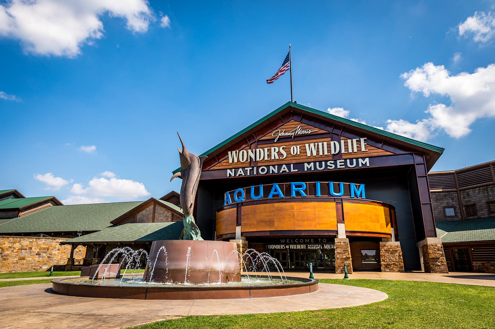
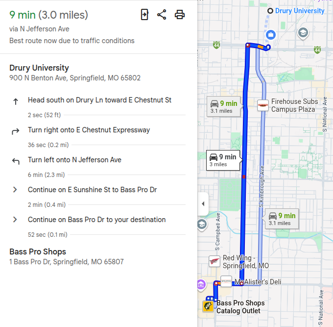

Section 2: Historical Perspectives on Wilderness
Justin Leinaweaver (Fall 2026)


The Edenic Narrative of Wilderness
The wilderness is a godless and disorganized place of danger and temptation
We must dominate the wilderness (maximally exploit all of its resources)
The Sublime Narrative of Wilderness
The Sublime Narrative of Wilderness
The wilderness is a place we enter as pilgrims seeking connection with something beyond ourselves
Its value is linked to its purity (e.g. absence of our interference)
The Sublime Narrative of Wilderness
Find a product, service or experience for sale in our community that represents the sublime narrative in action
What did you find?
Why is this connected to the sublime narrative?
Do you believe it is a sincere expression of the sublime or marketing?
The Sublime Narrative of Wilderness
Find a recent example of someone arguing that we should preserve some specific piece of wilderness or nature in order to maximize its value.
Read the excerpts from Pinchot, Spirn, and the USDA team
Submit your reflection on these ideas and how they apply to the world around us